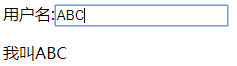
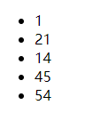
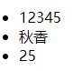
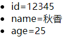
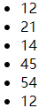
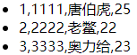
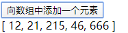
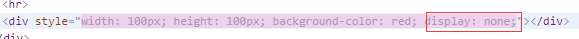
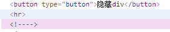

vue.js也称为vue,读音/vju/
指令以v-xxx开头
vue2.0和1.0相比，最大的变化是引入了Virtual DOM(虚拟DOM),页面更新效率更高，速度更快。
先瞅一瞅vue实例
var vm=new Vue({ //创建一个vue的实例传入json
el:'#box',//指定关联的选择器
data:{//对象存储数据
sjd:'holle world',
name:'tom'
}
}); <div id="box">
{{sjd}}<!-- 两队大括号称为模板 -->
</div>双向数据绑定
v-model 一般用于表单元素
用户名:<input type="text" v-model="name" />
<br>
<p>我叫{{name}}</p>vue data中的name为空：且表单输入什么 p标签显示什么

new Vue({
el:'#angs',
data:{
arr:[1,21,14,45,54],
user:{id:12345,name:'秋香',age:25}
}
})<li v-for="value in arr">{{value}}</li><!-- 循环数组 -->
循环user数组
<li v-for="value in user">{{value}}</li><!-- 只是循环了值，对象的索引key没有
键值循环
<li v-for="(v,k) in user">{{k}}={{v}}</li>
循环包含重复数据的集合 可以通过指定:key属性绑定唯一key,当更新元素可以重用元素，提高效率。
arr2:[12,21,14,45,54,12]<li v-for="(v,k) in arr2" :key='k'>{{v}}</li>
循环对象数组。
users:[//对象数组
{id:1111,name:'唐伯虎',age:25},
{id:2222,name:'老鳖',age:22},
{id:3333,name:'奥力给',age:23}
]<li v-for="user in users">{{user.id}},{{user.name}},{{user.age}}</li><!-- 循环对象数组 -->如果想要索引
<!-- user加上一个索引，index从0开始 -->
<li v-for="(user,index) in users">{{index+1}},{{user.id}},{{user.name}},{{user.age}}</li>
用来绑定事件的用法 可以用@代表来简写
例如：
点击按钮时向数组中添加一个元素
new Vue({
el:'#itany',
data:{ //存储数据
arr:[12,21,215,46],
},
methods:{ //存储方法
add(){
// arr.push(666);默认不能直接访问
this.arr.push(666);//使用this访问当前实例中的成员
this.fname();
}
}
})<button type="button" v-on:click="add()">向数组中添加一个元素</button>
用来显示或者隐藏元素，v-show是通过display实现,v-if是每次删除后再重新创建
例如：
点击按钮隐藏div
methods:{
change(){
this.flag=!this.flag;
}
} <button type="button" v-on:click="change()">隐藏div</button>
<hr >
<div class="" style="width: 100px; height: 100px; background-color: red;" v-show="flag">
</div>v-show是通过display设置none属性实现隐藏

<button type="button" v-on:click="change()">隐藏div</button>
<hr >
<div class="" style="width: 100px; height: 100px; background-color: red;" v-if="flag">
</div>v-if是每次删除代码后再重新创建

v-on:click点击事件可简写为@click
事件对象$event
包含事件相关信息，如事件源，事件类型，偏移量
事件冒泡 （往上传播）
阻止事件冒泡使用 .stop
阻止事件默认行为.prevent
原生js方式，依赖于事件对象
事件修饰符 只触发一次 .once
关于键盘事件
简写 不需要事件对象 按键别名或按键的值
@keydown.ctrl或@keydown.13
属性的绑定和简写
v-bind:属性='' 简写:src
v-bind可以直接访问vue中的数据，不需要使用{{}}
例如：
let vm = new Vue({
el:'#box1',
data:{
src1:'//atts.w3cschool.cn/attachments/cover/cover_erlang.png?imageView2/1/w/64/h/64&t=1542019173',
w:'200px',//宽度
h:'100px',//高度
},
methods:{
}
});src1为链接
<img :src="src1" :width="w" :height="h"><!-- 简写直接加上: --> <style type="text/css">
.aa{
background: #0062CC;/* 背景色 */
}
.bb{
color: red;/* 字体颜色 */
font-size: 20px;/* 字体大小 */
}
.vv{
font-family: "宋体";/* 字体样式 */
text-align: center;/* 居中 */
}
</style>绑定单个样式 若要用多个样式，则用数组形式
<p :class="cc">我的世界</p>数组形式绑定多个样式
在vue的data中给样式赋值别名
let vm = new Vue({
el:'#box1',
data:{
w:'200px',//宽度
h:'100px',//高度
cc:'aa',
dd:'bb',
ss:'vv',
},
methods:{
}
});<p :class="[cc,dd,ss]">我的世界</p>json形式绑定
data:{
flag:true,
num:-1,
} <p :class="{aa:true,bb:flag}">我的世界</p>
<p :class="{aa:num>0}">我的世界</p><!-- 大于零为true -->变量引用json
data:{
holle:{aa:true,bb:true,vv:true}
}<p :class="holle">引用变量json</p>